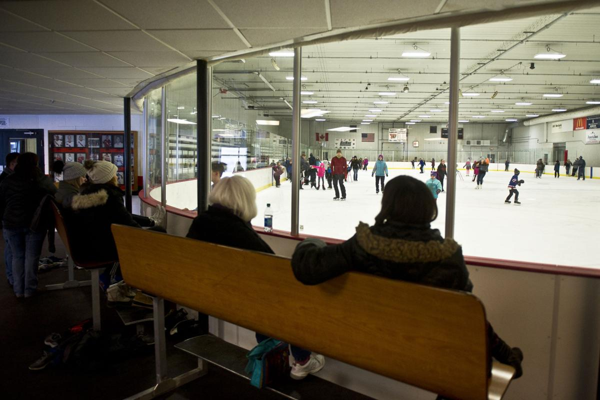

The Bud King Ice Arena is home of the Winona Winhawks, the public school hockey team.
You
can watch their hockey matches there for entertainment purposes, but thats not all.
The arena also has Free Skate times where you and a group of friends
or family can gather to skate for few hours.
They offer rentals on skates if you don't have or own any.
The facility is well maintained, with the ice being smoothed over with little to no bumps.
Even more, the rink itself
has a disco ball that they turn on for a while when they change the music.
They also have a second rink outside.